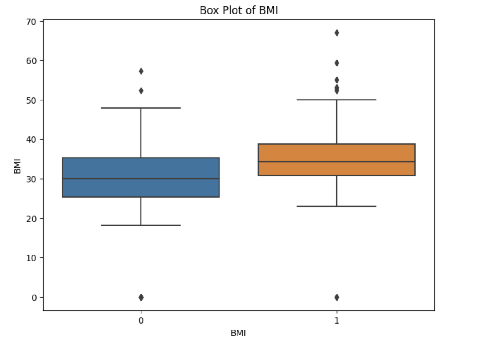
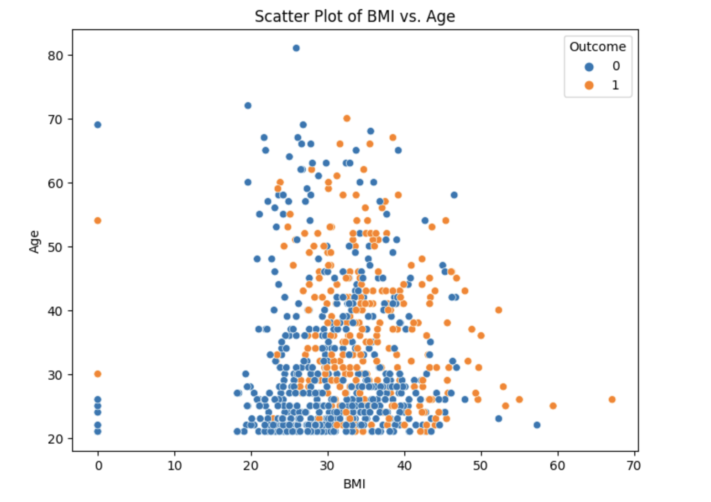
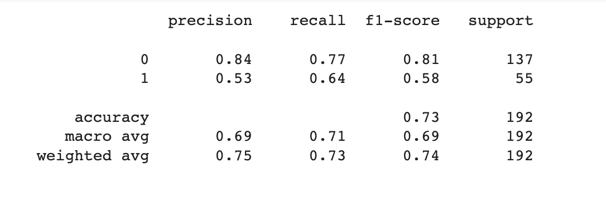

Predictive Modeling for Diabetes Risk Assessment: Harnessing Machine Learning for Timely Intervention
Introduction
This project aims to develop a predictive model using machine learning techniques to accurately predict the presence or likelihood of diabetes in individuals. Diabetes is a chronic condition affecting a significant portion of the global population, and early detection plays a vital role in managing and preventing complications. By leveraging advanced machine learning algorithms and analysis of various health-related features, I aim to build a robust and accurate model that can assist in early identification and intervention for individuals at risk of developing diabetes.
Data Description
The dataset used in this project contains information about several medical features of individuals, as well as the diabetes outcome. Here is a description of the columns in the dataset:
Pregnancies: Number of times pregnant
Glucose: Plasma glucose concentration in an oral glucose tolerance test
BloodPressure: Diastolic blood pressure (mm Hg)
SkinThickness: Triceps skinfold thickness (mm)
Insulin: 2-Hour serum insulin (mu U/ml)
BMI: Body mass index (weight in kg/(height in meters)^2)
DiabetesPedigreeFunction: Diabetes pedigree function (a function that represents the likelihood of diabetes based on family history)
Age: Age in years
Outcome: Diabetes outcome (0 for non-diabetic, 1 for diabetic)
Project Steps
Data Preprocessing: Perform necessary data preprocessing steps such as handling missing values, handling categorical variables (if any), and scaling the features if required.
Exploratory Data Analysis (EDA): Conduct EDA to gain insights into the dataset. Analyze the distribution of each feature, identify any outliers, and explore relationships between features and the target variable. Visualize the data using plots and charts to better understand the patterns and correlations.
Data Split: Split the dataset into training and testing sets. The training set will be used to train the SVM model, while the testing set will be used to evaluate its performance on unseen data.
Model Selection: Choose the SVM algorithm as the classifier for the classification task. SVM is known for its effectiveness in handling both linear and non-linear classification problems.
Hyperparameter Tuning: Use techniques like GridSearchCV to find the best combination of hyperparameters for the SVM model. Experiment with parameters such as the choice of kernel (linear, radial basis function (RBF), polynomial, etc.), the regularization parameter (C), and any other relevant parameters specific to the SVM algorithm.
Model Training: Fit the SVM model with the training data using the optimized hyperparameters obtained from the previous step.
Model Evaluation: Evaluate the trained SVM model using the testing data. Calculate metrics such as accuracy, precision, recall, and F1-score to assess the model's performance. Additionally, consider generating a confusion matrix or ROC curve to gain deeper insights into the model's performance.
Exploratory Data Analysis

Based on the box plot analysis, it can be observed that individuals with diabetes have a higher median BMI (Body Mass Index) value of 35 compared to individuals without diabetes, who have a median BMI value of 30. This indicates a potential association between higher BMI and the presence of diabetes.

Based on the scatter plot of BMI versus Age, it can be observed that individuals with diabetes tend to have a BMI ranging between 30 to 50 and are predominantly concentrated in the age group over 30. However, there doesn't appear to be a clear and distinct trend or pattern that allows for a conclusive differentiation between individuals with diabetes and those without diabetes based solely on BMI and age. Further analysis and exploration may be required to identify additional factors or variables that contribute to the classification of diabetes and non-diabetes individuals.

The classification report provides an evaluation of the performance of a classification model based on metrics such as precision, recall, and F1-score. In this case, we have a binary classification task with two classes: 0 (non-diabetic) and 1 (diabetic).
The report indicates that for class 0 (non-diabetic), the precision is 0.84, indicating that 84% of the instances predicted as non-diabetic are indeed non-diabetic. The recall is 0.77, indicating that 77% of the actual non-diabetic instances are correctly identified as non-diabetic. The F1-score, which is the harmonic mean of precision and recall, is 0.81. The support refers to the number of instances in class 0, which is 137.
For class 1 (diabetic), the precision is 0.53, indicating that 53% of the instances predicted as diabetic are indeed diabetic. The recall is 0.64, indicating that 64% of the actual diabetic instances are correctly identified as diabetic. The F1-score for class 1 is 0.58. The support for class 1 is 55.
The overall accuracy of the model is 0.73, which means that it correctly predicts the outcome for 73% of the instances in the dataset. The macro average F1-score is 0.69, which represents the average F1-score across both classes, giving equal weight to each class. The weighted average F1-score, which takes into account the support for each class, is 0.74.
In summary, the model shows reasonably good performance in predicting the non-diabetic class, with high precision and relatively good recall. However, it has lower performance in predicting the diabetic class, with lower precision and moderate recall. Further analysis and fine-tuning of the model may be required to improve its performance, especially in detecting diabetic instances.
Conclusions
In conclusion, this project aimed to develop a machine learning model to predict the likelihood of an individual having diabetes based on various medical features. The dataset used in the project consisted of information such as pregnancies, glucose levels, blood pressure, skin thickness, insulin levels, BMI, diabetes pedigree function, age, and the diabetes outcome.
During the project, I performed data preprocessing, including handling missing values and exploring the distribution of the features. We split the dataset into training and testing sets and selected the Support Vector Machine (SVM) algorithm as the classifier for its effectiveness in handling both linear and non-linear classification problems.
Hyperparameter tuning was conducted using techniques like GridSearchCV to find the optimal combination of hyperparameters for the SVM model. The model was trained on the training data using the optimized hyperparameters and evaluated on the testing data. Performance metrics such as accuracy, precision, recall, and F1-score were calculated to assess the model's performance.
The results showed that the model achieved relatively good accuracy, with an overall accuracy of 73%. The precision and recall varied for each class, with class 0 (non-diabetic) showing higher precision (84%) and class 1 (diabetic) demonstrating higher recall (64%). The F1-score provided a balanced measure between precision and recall.
Based on the evaluation metrics, it is evident that the model performed better in predicting the non-diabetic class compared to the diabetic class. Further improvements could be made by exploring additional features, feature engineering techniques, or trying different classification algorithms to enhance the model's predictive capabilities.
Overall, this project demonstrates the application of machine learning techniques, specifically SVM, in predicting diabetes based on medical features. The findings contribute to the understanding of the relationship between various factors and the presence of diabetes. The model can be further refined and deployed in real-world scenarios to aid in early detection and management of diabetes, potentially leading to improved healthcare outcomes.